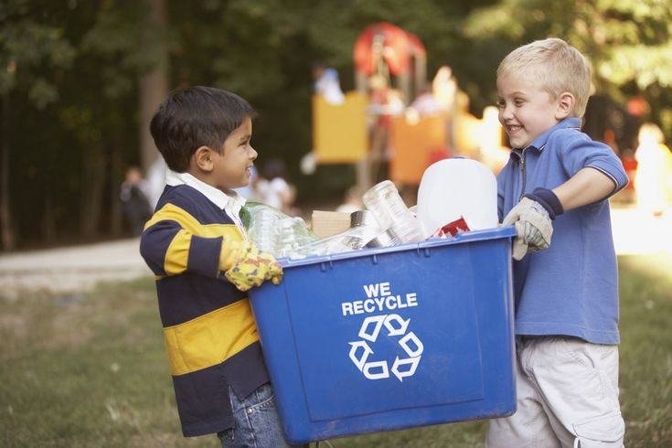

LETS PROMOTE RECYCLING
What does recycling do???
Recycling is the process of collecting and processing materials that would otherwise be thrown away as trash and turning them into new products
Read more
START MONITORING RESOURCE USAGE
How to monitor resource usage?
Monitoring resource utilization ensures that projects stay on track and within budget. By closely tracking resource allocation, project managers can identify bottlenecks, make informed decisions, and allocate resources effectively to maximize efficiency and meet project objectives.
Read more
ENSURE REGULATORY COMPLIANCE
Why should we comply with the law?
Regulatory compliance is an organization's adherence to laws, regulations, guidelines and specifications relevant to its business processes.
Read more